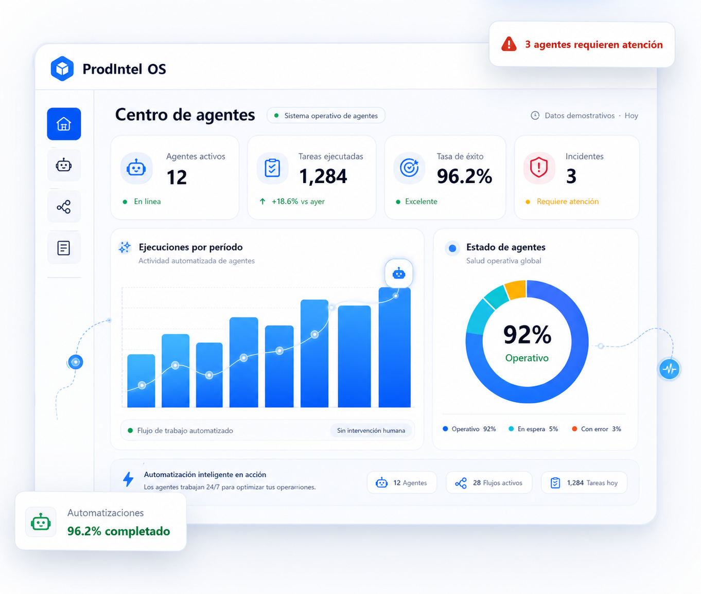

ProdPilot
Planificación inteligente de producción, inventario y demanda para empresas manufactureras.
Production PlanningDemand ForecastScenario LabAgente de planificación
Conocer ProdPilot Software · Data · AI Agents
Diseñamos plataformas empresariales que conectan operación, datos y agentes de inteligencia artificial para automatizar procesos, detectar oportunidades y mejorar decisiones.

Convertimos datos operacionales en decisiones y acciones.
Ecosistema ProdIntel
Cada plataforma combina gestión especializada con agentes inteligentes capaces de analizar contexto, detectar desviaciones y asistir a los equipos en sus decisiones.
Plataforma inteligente de gestión para ferreterías que integra ventas, inventario, compras, proveedores y análisis operacional.
Controla. Anticipa. Decide.
Planificación inteligente de producción, inventario y demanda para empresas manufactureras.
Control documental empresarial con versiones, estados, responsables y flujos de aprobación.
Aplicación para gestionar el mantenimiento de activos, equipos y maquinaria industrial desde una plataforma centralizada.
Digitalización de producción, maquinaria y trazabilidad operacional directamente desde planta.
ProdIntel Intelligence
Nuestros agentes combinan datos operacionales, reglas de negocio e inteligencia artificial para observar el contexto, detectar desviaciones, explicar hallazgos y proponer acciones. El equipo mantiene siempre el control de cada decisión.
Análisis automático · Datos demostrativos · Revisión humana requerida
Integraciones
Integramos fuentes operacionales y administrativas en una arquitectura conectada, segura y lista para crecer.
Desarrollo a medida
También desarrollamos soluciones específicas conectadas directamente con los procesos, datos y sistemas existentes de tu empresa.
Conversemos sobre tu proyectoLevantamos procesos, usuarios y decisiones críticas.
Integramos sistemas y fuentes sin perder continuidad.
Diseñamos software claro, seguro y escalable.
Información operacional
Ejemplos de indicadores que nuestras plataformas permiten gestionar. No representan resultados atribuidos a clientes.
Tecnología
Una base técnica preparada para integrar datos empresariales y desplegar agentes especializados, seguros y supervisados.
Descubre cómo ProdIntel puede transformar procesos manuales en software conectado con agentes inteligentes.